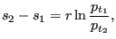
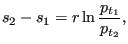
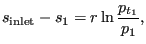
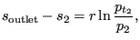
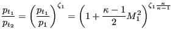

Next: Vortex
Up: Fluid Section Types: Gases
Previous: Branch, Split
Contents
Properties: adiabatic, not isentropic, directional, inlet based restrictor
This is an element, in which a gas mass flow is split into three separate
branches.(See Fig.109) It
is characterized by the following constants (to be specified in that order on
the line beneath the *FLUID SECTION, TYPE=CROSS SPLIT card):
- label of the element defined as branch 0.
- label of the element defined as branch 1.
- label of the element defined as branch 2.
- label of the element defined as branch 3.
- cross section
 of branch 0, whereas
of branch 0, whereas 
- cross section
 of branch 2, whereas 
of branch 2, whereas 
- angle
 .
.
- angle
 .
.
- hydraulic diameter

- hydraulic diameter

 -correction factor
-correction factor  for the main passage (
for the main passage (
 )
)
- -correction factor
 for the branches (
for the branches (
 )
)
Figure 109:
Geometry of a flow splitting cross
|  |
guido dhondt
2018-12-15